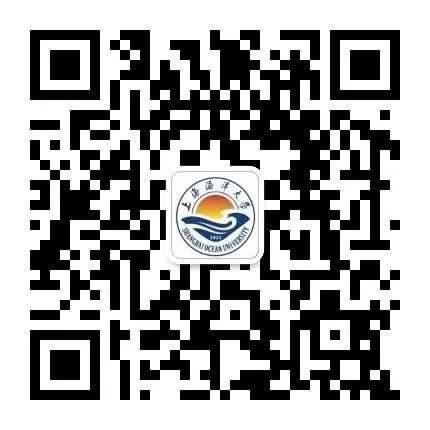
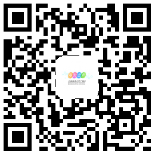

团队简介
上海海洋大学官微（微信、微博）作为学校宣传工作的一个重要载体，在校党委宣传部的指导下开展工作，主要面向的对象是在校师生、毕业校友、学生家长、社会人士等群体，积极宣传党的路线、方针、政策，围绕学校的中心工作，及时报道校内的新人、新事、新风尚，反映学校在教学、科研、学生活动等方面的动态，丰富校园生活，为建设和谐校园创造良好的舆论环境。官微团队致力于打造一个“无微不至”的服务型学生组织，希望在海大人成为一个心中“有态度、有温度”的平台。
在各大校级学生组织中，官微是极少数每日与指导老师、部员互相沟通交流的部门，可以得到更多、更专业的指导。官微是学校对内、对外宣传和展示的重要窗口，是学校最权威的官方公众平台。目前组织下设文案策划部、微信运营部、微博运营部、摄影部及设计部共5个部门。

加入我们
2018年秋季招新链接（当前未在招新阶段，敬请关注！）
团队足迹
| 2018届 |
|
王肖
官微负责人 |
杨若君
官微负责人 |
罗惠丽
文案策划部部长 |
王烺
文案策划部部长 |
叶学斌
微信运营部部长 |
|
王雪
微信运营部部长 |
刘睿祺
微博运营部部长 |
陈一笑
摄影部部长 |
王晓鑫
设计部部长 |
|
| 2017届 |
|
危贤文
官微负责人 |
吴婷婷
官微负责人 |
赵祎玮
文案部部长 |
黎诗亭
文案部部长 |
陈雪婷
编辑部部长 |
|
刘英
编辑部部长 |
王琳禹
微博部部长 |
杨若君
摄影设计部部长 |
|
|
|
| 2016届 |
|
危贤文
官微负责人 |
吴婷婷
官微负责人 |
|
|
|
团队简介
上海海洋大学校记者团是隶属于我校党委宣传部的校级组织，同时也是中国高校传媒联盟主席团单位、中国（上海）高校传媒联盟会员媒体，2017-2018年度我们还荣获了上海校媒颁发的“五星校园媒体”称号。是我校最专业的学生媒体。
在记者团，第一手资讯，报道拍摄校内外活动，与大咖面对面交流，还有新民晚报的实习机会等，喜欢新闻、喜欢摄影、喜欢文字、喜欢ps与视频制作、喜欢视觉设计、网上冲浪的同学千万不要错过！
加入我们
2018年秋季招新链接
（当前未在招新阶段，敬请关注！）
暂时还没有介绍呢，敬请期待！
团队简介
上海海洋大学“海大之声”广播台是隶属于上海海洋大学党委宣传部的组织，是上海海洋大学通讯社的成员之一。我们的工作就是让海大校园充满活力，每个午后和黄昏，不论雨天或晴天，沿路旁的广播从来不会缺席。

加入我们
2018年秋季招新链接
（当前未在招新阶段，敬请关注！）
团队足迹
| 2018届 |
|
夏晴阳
台长 |
徐慧
节目总监 |
汤嘉雯
副台长 |
杨白斌
副台长 |
刘瑞琦
编辑部部长 |
|
孙诗宇
播音部部长 |
张之怡
制作部部长 |
范欣茹
外联部部长 |
黎卉
外联部部长 |
陈玮文
办公室部长 |